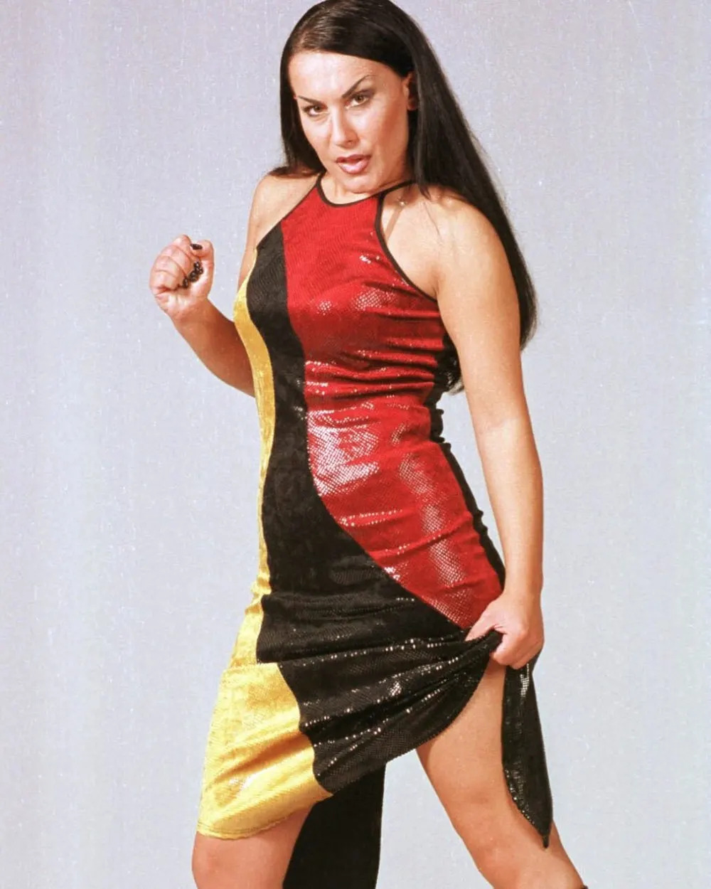

Indira Levak, rođena Vladić, poznata i kao Ira te pod umjetničkim imenom Indira Forza, rođena je 15. rujna 1973. u Županji. Srednja je kći Franje i Ismete Vladić. Ime je dobila po indijskoj premijerki Indiri Gandhi, a sama voli reći da u prijevodu znači "živa vatra" i da to najbolje opisuje njezin temperament. U djetinjstvu je imala nadimak Rambo. S devet godina upisala je glazbenu školu "Srećko Albini" u Županji i ostala u njoj šest godina. U dvanaestoj je postala članica županjske limene glazbe, gdje je trinaest godina svirala klarinet, a poslije i harmoniku. U osmom razredu osnovala je sastav s četiri prijateljice, "Zauvijek mladi", koji se brzo raspao, a neko je vrijeme pjevala i u grupi BIS. Prvi novac nije zaradila glazbom nego u polju kukuruza. S 14 godina izvlačila je metlice od sedam ujutro do sedam navečer, a doručak je bio pašteta i kruh pojeden ispod traktorske prikolice.
Godine 1993. zaposlila se u uredu za opću upravu i nekoliko godina radila puno radno vrijeme, a novac je ulagala u glazbu. Boris Đurđević primijetio ju je na jednom sprovodu u Županji i nedugo zatim pojavio se na pragu njezina doma. Predložio joj je da pjeva u bendu koji još nije imao ni ime, ali je, kako Indira priča, bio siguran da će uspjeti. Boris i Tomislav Jelić radili su tada kao DJ-i na vinkovačkom radiju i snimali jinglove. Boris je pisao pjesme, a Tomislav radio aranžmane. Ime Colonia uzeli su iz latinskog naziva Vinkovaca, Colonia Aurelia Cibalae.
Grupa je osnovana 1996., a prvi singl "Nek' vatre gore sve" poslali su svim radijskim postajama u Hrvatskoj. Drugi, "Sve oko mene je grijeh", postao je veliki hit i popeo se na vrh domaćih ljestvica. Prvi album, "Vatra i led", izašao je 1997. i prodan je u više od 40 tisuća primjeraka, što je za tadašnje prilike bilo puno. Na Dori su s pjesmom "U ritmu ljubavi" završili na četvrtom mjestu, a nekoliko mjeseci poslije osvojili su nagradu na Melodijama hrvatskog Jadrana pjesmom "Lady Blue". Album "Ritam ljubavi" izašao je 1999., a "Jača nego ikad" 2000. u izdanju Croatia Recordsa. Bio je to prvi njihov album objavljen u svim republikama bivše Jugoslavije. Pjesma "Deja vu" s tog albuma postigla je veliki uspjeh u Aziji, a japanski duo Kinki Kids snimio ju je kao "Jonetsu". Colonijine pjesme slušale su se i u Koreji, gdje su izlazile u remix verzijama.
Pravi proboj stigao je 2001. albumom "Milijun milja od nigdje". Za tridesetak dana prodano ga je 50 tisuća primjeraka, a ukupna prodaja u Hrvatskoj i inozemstvu prešla je 300 tisuća. Pjesma "Za tvoje snene oči" osvojila je Grand Prix Hrvatskog radijskog festivala i bila najslušanija pjesma 2001. Sljedeće godine izašao je album "Izgubljeni svijet", uz koji se dobivao i DVD sa spotovima i biografijom, što je tada bila rijetkost. Pjesma "Oduzimaš mi dah" opet je donijela Grand Prix Hrvatskog radijskog festivala, a 2003. treći ga je osvojila "C'est la vie", najava albuma "Dolazi oluja". Uslijedio je "Najbolje od svega" (2005), prvi album za Menart, koji je izašao i u Rusiji, Ukrajini, Češkoj i Slovačkoj. Naslovna pjesma albuma "Do kraja" postala je himna showa Big Brother. Zatim su izašli "Pod sretnom zvijezdom" (2008), "X" (2010), "Tvrđava" (2013) i "Feniks" (2015).

U privatnom životu Indira se 21. travnja 2001. udala za Narcisa Mujkića, s kojim je bila u braku do 2010. Godine 2013. upoznala je poduzetnika Miroslava Levaka, a vjenčali su se 31. svibnja 2014. Miroslav je neko vrijeme bio i menadžer grupe. Zajedno su se bavili i dizajnom namještaja i sprava za vježbanje, a Indira ima i vlastitu liniju Indira Levak Dizajn. Iste godine kad se udala, Tomislav Jelić napustio je Coloniju iz osobnih razloga i grupa je postala duo. Godine 2013. proglašena je i počasnom građankom Županje, što je, kaže, najteže priznanje jer dolazi od vlastitog grada. Dvadeset godina karijere Colonia je 2016. obilježila koncertom u zagrebačkom Domu sportova pred oko tri tisuće ljudi, uz stotinu plesača i brojne goste. Indira taj koncert i danas navodi kao krunu zajedničkog rada.
Uz glazbu se sve češće pojavljivala na televiziji. U showu "Tvoje lice zvuči poznato" bila je gostujuća članica žirija još u prvoj sezoni 2014., a u finalu četvrte sezone 2017. sjedila je u žiriju uz Marija Petrekovića. Stalna članica žirija bila je 2020. Godine 2015. i 2016. bila je mentorica u prve dvije sezone showa "The Voice – Najljepši glas Hrvatske" na HRT-u, u ekipi s Tonyjem Cetinskim, Jacquesom Houdekom i Ivanom Dečakom. Njezin tim zvao se "Svijet voli pobjednike", a u drugoj sezoni pobijedila je njezina natjecateljica Ruža Janjiš. Godine 2005. kratko se pojavila i kao gošća u seriji "Bitange i princeze". Lice je bila i nekoliko marki, među njima Planet obuće, Dormea, Volkswagena i Calvina Kleina.
Prekretnica je stigla 31. svibnja 2017., kad je na Instagramu objavila da napušta Coloniju nakon 21 godine. Napisala je da već dugo razmišlja o solo karijeri i da želi ostvariti neostvarene želje i snove. Razloge je poslije objasnila u intervjuima. Rekla je da su Boris i ona dali maksimum, da je došlo do zasićenja i zamora nakon 21 godine rada s istim autorom i da mora izaći iz zone komfora. Ništa nije bilo skriveno ni od publike: koncerti su nastavljeni pod imenom Indira, a informacije o njima objavljivala je na novoj Facebook stranici "Indira Icolonia Forza". Nekoliko tjedana poslije, 14. lipnja 2017., javnosti je predstavljena Ivana Lovrić kao nova pjevačica Colonije.
Prvi solo singl, "Dva luđaka", izašao je u srpnju 2017., a tekst je napisala Antonija Šola. Slijedio je "Dođi" sa spotom, a u rujnu 2018., oko svojeg 45. rođendana, Indira je objavila prvi solo album "Valkira" s 13 pjesama. Na njemu je Alen Islamović u dvjema pjesmama, a tamburaški sastav Dyaco gostuje u "Pukni zoro", čiji je spot premijerno prikazan u veljači 2019. u emisiji Top.hr na RTL-u. Indira je napisala tekst za mnoge pjesme, a producenti su bili Branimir Mihaljević, Denis Mevlja i drugi. Za Dyaco je napisala i tekst pjesme "Olga".
Na Dori 2020. u Opatiji, 29. veljače, nastupila je s pjesmom "You Will Never Break My Heart", koju potpisuju Branimir Mihaljević, Ambrogio Crotti i Doron Medalie, a hrvatski tekst Indira i Medalie. Pjesma je zbog svojih neonskih kostima i upečatljive koreografije ostala u sjećanju publike i završila na trećem mjestu. Zanimljivo je da su iste večeri u Dori nastupili i Colonia, s Ivanom Lovrić i pjesmom "Zidina", pa su se bivša i sadašnja pjevačica našle u istom natjecanju. Eurovizija 2020. otkazana je zbog pandemije, pa je Indirina pjesma ostala bez šanse za međunarodnu pozornicu.
Krajem 2021. Indira se neočekivano ponovno pojavila uz Borisa Đurđevića, koji je producirao i skladao pjesmu "Atlantida". Ista pjesma dala je naslov njezinu drugom albumu, objavljenom u svibnju 2022. u izdanju RTL Musica, koji je izašao u digitalnom obliku. Na njemu je i duet "Iskra" s Halidom Bešlićem, kao i pjesme "Čudo", "Za milijun godina", "Prvi se pamti" i "You Will Never Break My Heart". Iste je godine izašla i "Žena od titana". U prosincu 2023. objavila je singl "Lopovi u tami" s Dženanom Lončarevićem, a 2025. ljetni hit "Nema dilema", u kojem gostuje mladi puljski glazbenik Manč. Pjesmu su radili Miro Buljan, Neno Ninčević i ZePelin, a Indira je rekla da je htjela probati kako zvuči u cipelama mlađe generacije, koja je odrasla na njezinim pjesmama.
U ljeto 2024. Indira je na Instagramu objavila da se nakon 11 godina razvodi od Miroslava Levaka. Poručila je da ostaju prijatelji i poslovni partneri, a Miroslav je i dalje često uz nju na koncertima. Iste je godine u obitelji stigao unuk Liam. Godine 2025. nastupala je na brojnim festivalima diljem regije, među ostalim u Vinkovcima, Nišu i Zagrebu, a zagrebačka Arena ugostila ju je uz Teu Tairović na koncertu u svibnju. Početkom 2026. održala je koncert u rodnoj Županji, a dva termina u beogradskoj MTS dvorani, 13. i 14. ožujka, rasprodana su tako brzo da je dodan i treći, 15. ožujka. Za listopad 2026. najavljena je nova serija koncerata u toj dvorani.